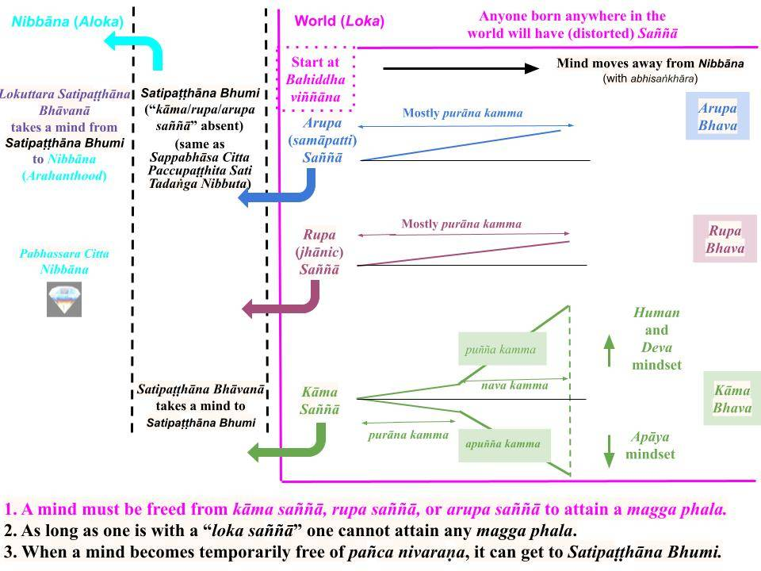

Kāma saññā, or the "distorted saññā" we experience in kāma loka, can be overcome by a Sotapanna by overcoming pañca nivaraṇa. That is the mindset required to cultivate Satipaṭṭhāna to attain higher magga phala, especially the Anāgāmi stage.
January 25, 2025

Download/Print: "Distorted Saññā Present in All Realms"
Satipaṭṭhāna Bhumi - "Distorted Saññā" Absent
1. Using the above chart, I will summarize the main features of the Buddha's worldview. I will list them here and discuss the necessary details in upcoming posts.
- First, the world (loka) of 31 realms (in kāma, rupa, and arupa loka) is within the "pink box." Nibbāna (with the suffering-free pabhassara mind) is to the extreme left. In between, there is "Satipaṭṭhāna Bhumi" (bhumi means "region"), where any "distorted saññā" of kāma, rupa, or arupa loka is absent.
- Since Nibbāna means "total separation from the world (loka)," it is also called "aloka" as indicated in the chart. For example, in the "Gotama Sutta (SN 12.10)", the Buddha described attaining the Buddhahood as "Nirodho, nirodho’ti kho me, bhikkhave, pubbe ananussutesu dhammesu cakkhuṁ udapādi, ñāṇaṁ udapādi, paññā udapādi, vijjā udapādi, āloko udapādī”ti." The same verse is in several suttās. Here, "āloko udapādī" means "separation from the world" upon attaining the Buddhahood.
- Satipaṭṭhāna Bhumi is where a Noble Person (above the Sotapanna state) can experience a mindset close to Nibbāna; thus, it is also called Tadaṅga Nibbuta ("momentary or temporary Nibbāna"). It is also called Sappabhāsa Citta (lower version of the "defilement-free" pabhassara citta) in many suttās and Paccupaṭṭhita Sati in the Mahā Satipaṭṭhāna Sutta.
Mind Is Contaminated Even at Bahiddha Viññāna Stage
2. Upon receiving sensory input, the mind of a puthujjana ALWAYS starts at the bahiddha viññāna stage. The mind is already contaminated because it has all saṁyojanās intact. Thus, it immediately gets into the ajjhatta viññāna stage and proceeds to get further contaminated within seconds. That contamination can occur in two phases: purāṇa kamma and nava kamma. It ALWAYS gets into the purāṇa kamma stage but gets into the nava kamma stage only if it gets to the "taṇhā paccayā upādāna" step in Paṭicca Samuppāda.
- Furthermore, the nava kamma stage is absent in rupa and arupa loka (i.e., Brahma realms), where strong kamma done with kāya and vaci abhisaṅkhāra are absent.
- In kāma loka (with the four apāyās, human realm, and six Deva realms), the nava kamma stage includes both moral deeds (puñña kamma) and immoral deeds (apuñña kamma).
Different Kinds of "Distorted Saññā" in Kāma, Rupa, and Arpua Loka
3. As we can see, each loka (kāma, rupa, and arupa) is associated with its set of “distorted saññā.” In kāma loka, kāma saññā includes six types, one each for the six senses: rupa saññā, sadda saññā,..dhamma saññā. In rupa loka, “distorted saññā” is that of "jhānic pleasures," and in arupa loka, the "samāpatti pleasures."
- If the corresponding saṁyojanās remain unbroken, a mind will proceed to at least the nava kamma stage.
- That is a critical point. A mind within the "pink box" in the above chart (i.e., within kāma, rupa, or arupa bhava) WILL ALWAYS move away from Nibbāna (indicated to the left). That starts with the AUTOMATIC abhisaṅkhāra generation at the beginning, i.e., at the bahiddha viññāna stage.
- The arrow at the top (within the "pink box"), showing "Mind moves away from Nibbāna," emphasizes that critical observation in the chart. As we can see, the mind of a puthujjana ALWAYS moves away from Nibbāna. Most damage is done in the nava kamma stage in kāma loka, but even in the purāṇa kamma stage (which applies in all three lokās), a mind always moves away from Nibbāna. This is related to the vipariṇāma dukkha. See "Vipariṇāma – Two Meanings" and "Aniccaṁ Vipariṇāmi Aññathābhāvi – A Critical Verse." Anyone interested or able to get an idea about it can ask questions in the forum.
- Most people are not even aware of the above "broad worldview" of the Buddha. The world population today is about 8 billion, and only about half a billion are estimated to be Buddhists. However, at least 90% of Buddhists are also unaware of the above picture, and most likely, over 99.9% of Buddhists are not aware of the details we just discussed.
Pañcakkhandha Is Experienced Only in Arahant-Phala Samāpatti
4. A main conclusion derived from the above discussion is the following. A puthujjana's mind has NEVER experienced pañcakkhandha (free of defilements and "distorted saññā"). That is why the Buddha stated that attachment is ALWAYS to pañcupādānakkhandha and NOT to pañcakkhandha. Regardless of the realm, the mind of a puthujjana ALWAYS stays inside the "pink box" in the chart.
- Therefore, while in the beginningless rebirth process, a living being has ALWAYS experienced a “distorted saññā” corresponding to their realm. Saññā cannot arise only in the asañña realm because no thoughts arise while in that realm.
- The first sensory experience without a “distorted saññā” occurs when attaining the Sotapanna stage. That is when, for the very first time, one gets a glimpse of Nibbāna. But even that is not the “suffering-free pabhassara mind” because it still has seven unbroken saṁyojana. Thus, that state is called “sappabhāsa citta” or paccupaṭṭhita sati or tadaṅga Nibbuta as discussed in #1 above. It is also called "Satipaṭṭhāna Bhumi" because one needs to get there to cultivate the lokuttara version of Satipaṭṭhāna.
- At the moment of Arahanthood, all saṁyojana are removed, and one will experience the pabhassara citta/mind for the first time. Note that there is a difference between the sappabhāsa citta and the pabhassara citta. The meaning of "pabhassara" is explained in "Uncovering the Suffering-Free (Pabhassara) Mind."
5. A person experiences the "contamination and distortion-free" pabhassara citta for the first time when attaining the Arahant stage of Nibbāna. This is also when pañcakkhandha is experienced for the first time.
- Some Arahants (probably those who can get into jhāna/samāpatti, i.e., ubhatovimutti Arahants) can get into Arahant-phala samāpatti where they can experience that pabhassara citta at will for as long as they like. While in this Arahant-phala samāpatti, they are entirely unaware of the world. However, they are still aware of being alive.
- On the other hand, an ubhatovimutti Arahant can also enter "nirodha samāpatti" where the flow of cittas stops, i.e., pañcakkhandha does not arise either. This is how an Arahant can experience the anupadisesa Nibbāna before the death of the physical body, i.e., before Parinibbāna. This nirodha samāpatti can be experienced for up to seven days.
- Paññāvimutti Arahants cannot experience nirodha samāpatti. I believe they cannot also experience Arahant-phala samāpatti, but I am not sure about that. Also, see #10 of "A Sensory Input Triggers (Distorted) Saññā and Pañcupādānakkhandha."
A Sotapanna Can Access Satipaṭṭhāna Bhumi
6. A Sotapanna gets into Satipaṭṭhāna Bhumi (sappabhāsa citta, Tadaṅga Nibbuta, or Paccupaṭṭhita Sati) temporarily at the Sotapanna phala moment. A practicing Sotapanna (or Sakadāgāmi) can get into that state again by cultivating lokuttara Satipaṭṭhāna Bhāvanā (after comprehending the above "big picture" in the chart above.)
- When a Sotapanna experiences the pabhassara citta for the first time (at the Sotapanna phala moment), the mind holds that state only for a brief time. The mind returns to the “normal state” (human bhavaṅga state). Thus, one may be unaware of that "phala moment." However, one will feel a sense of joy that one cannot describe and be in that state for minutes to a couple of days (depending on the person).
- After a few days, a Sotapanna would return to the old life and may even forget that incident. As we know, a Sotapanna can generate greedy or angry thoughts while living an everyday life as a “householder.” However, with the lowest three saṁyojana removed from the mind, A Sotapanna will be incapable of committing an "apāyagāmi kamma" forever.
- Sotapannas and Sakadāgāmis can cultivate the lokuttara version of Satipaṭṭhāna and “recover” the “sappabhāsa citta.” While in that state, they can engage in Vipassanā and eliminate kāma rāga to attain the Anāgāmi stage.
Suppressing Pañca Nivaraṇa to Access the Satipaṭṭhāna Bhumi
7. Two factors play critical roles in getting a puthujjana to the Sotapanna stage: (i) One must "see with wisdom" why attachment to sensual pleasures will prolong suffering in the rebirth process. (ii) One must remove "kāma saññā" temporarily by suppressing pañca nivaraṇa.
- Fortunately, those two factors are interrelated. Both are cultivated when one focuses on Dhamma concepts (generating Dhamma vitakka/Dhamma vicāra).
- Another way to state the above is to cultivate the mundane version of Satipaṭṭhāna and “get close” to the “sappabhāsa citta.”
- While listening to a discourse, reading Dhamma concepts, or simply contemplating Dhamma concepts, the mind will get to the “sappabhāsa citta” and attain the Sotapanna stage.
Attachment to "Distorted Saññā" Decreases With Magga Phala
8. As we have discussed, everyone born with a human body (including Arahants) experiences the “distorted saññā” associated with kāma loka while living everyday life. However, attachment to “distorted saññā“gradually diminishes as one gets to higher stages of magga phala and eliminates more saṁyojana (sansāric bonds).
- A puthujjana attaches to “distorted saññā“ with all ten saṁyojana. Another way to say that is they attach to “distorted saññā“with diṭṭhi, taṇhā, and māna. Here, diṭṭhi is removed at the Sotapanna stage via the elimination of the first three saṁyojana (sakkaya diṭṭhi, vicikicchā, silabbata parāmāsa.)
- The only difference between a Sotapanna and a puthujjana is that a Sotapanna‘s mind will not allow committing an “apāyagāmi deed” because of the absence of the first three saṁyojana. Another way to say that is that a Sotapanna will not attach to the “distorted saññā” with sakkaya diṭṭhi (which means a Sotapanna will NEVER again have the wrong view that sensory pleasures in kāma loka can bring "long-term happiness.") They understand that the only suffering-free state is Nibbāna. They still attach to the “distorted saññā.” However, since the attachment is weaker due to the removal of three diṭṭhi saṁyojana, they are prevented from engaging in apāyagāmi kamma.
- As we know, one must remove kāma rāga saṁyojana to attain the Anāgāmi stage of Nibbāna. Elimination of kāma rāga saṁyojana is the same as removing "kāma taṇhā." That means one must overcome the tendency to attach to the "kāma saññā" inherent in kāma loka. That is the “distorted saññā” in kāma loka.
- The other components of taṇhā are associated with rupa and arupa loka and sustained by rupa rāga and arupa rāga, respectively. Thus, taṇhā is completely removed at the Arahant stage with the elimination of rupa rāga and arupa rāga saṁyojana. Finally, the Arahant stage removes māna (and uddhacca and avijjā saṁyojana). Here, avijjā is related to not understanding how a mind attaches to worldly things via "distorted saññā."
- Thus, Arahant will not be tempted by any “distorted saññā” even though they experience it. They will experience kāma saññā during daily living, rupa loka saññā (jhānic experience) while in jhāna, and arupa loka saññā (arupa samāpatti experience) while in arupa samāpatti. Thus, their minds will never be inside the "pink box" in the above chart (not shown).
Distorted Saññā Is a Root Cause of Avijjā
9. All our immoral deeds (and thus future suffering) are based on the distorted saññā, i.e., our false perception that external things (sights, sounds, tastes, ..) have mind-pleasing aspects embedded in them.
- Paṭicca Samuppāda programs our mental and physical bodies AND those external things to provide that distorted saññā. This is THE critical aspect to understand. I explained that in the first few posts in the “Worldview of the Buddha” section. Everything in the world arises via Paṭicca Samuppāda, a universal principle like Newton’s laws of motion. However, only a Buddha can discover Paṭicca Samuppāda because it is a mental phenomenon, not a material one.
- That distorted saññā clouds all our thinking. Until a Buddha comes to the world and explains that it is a mirage, humans believe that "pleasures" are in external things; see “Fooled by Distorted Saññā (Sañjānāti) – Origin of Attachment (Taṇhā) ”
- Thus, we could say distorted saññā is a root cause of avijjā. That is why it is the “Root of All Things”: “Mūlapariyāya Sutta – The Root of All Things” and “Saññā Nidānā hi Papañca Saṅkhā – Immoral Thoughts Based on ‘Distorted Saññā.’”
10. That is a summary. If anyone has questions, please ask in the discussion forum.
- It may seem that those below the Sotapanna stage don’t need to learn about the “distorted saññā.“
- However, I believe that “getting the full picture” would also make it easier to reach the Sotapanna stage. Understanding that all we crave is “not real” (they are illusions) makes a big difference in the mindset.
- People value “sensory pleasures” and are willing to lie, cheat, and even kill for them. Once Buddha’s worldview sinks into the mind, it will be easier to avoid “akusala kamma,” at least those with significant consequences. Most of our immoral actions are based on the “distorted saññā” as explained in “Fooled by Distorted Saññā (Sañjānāti) – Origin of Attachment (Taṇhā) ” and other recent posts; see "New / Revised Posts."